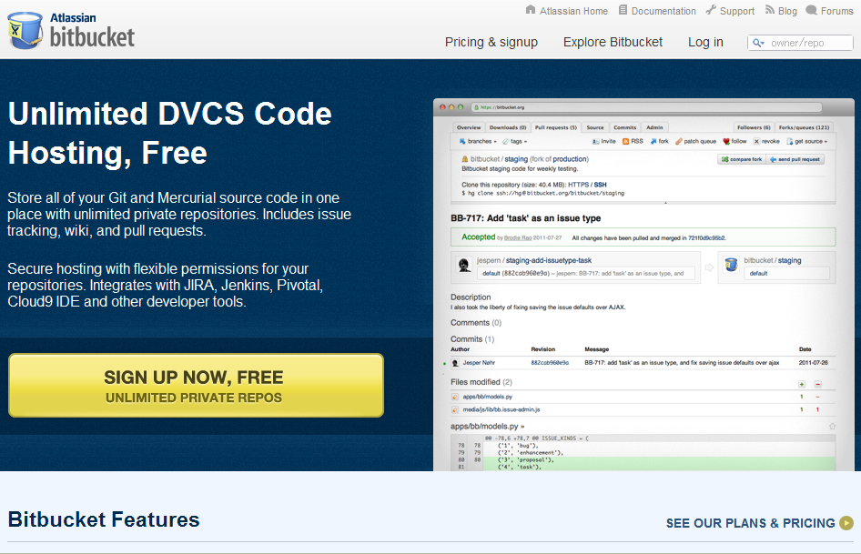
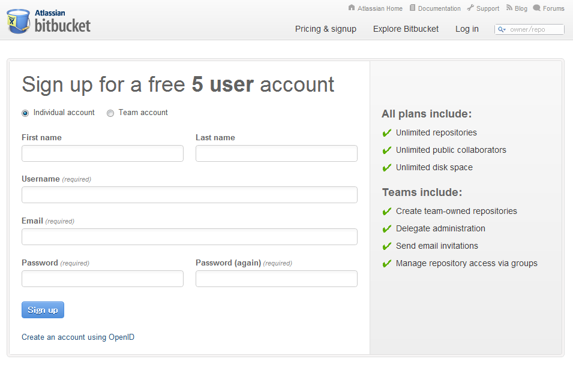

先ほど作成したアカウント情報をmercurialに設定します。
次の内容を設定ファイルに記載してください。
[ui] username = "ユーザ名 <メールアドレス>"
Note
Note
リポジトリ毎にユーザ名を変更したい場合は、リポジトリの .hg/hgrc に設定してください。
[ui]
username = "ユーザ名 <メールアドレス>"
Schemes Extension を利用すると次のような短縮URLでBitbucketのリポジトリにアクセスできます。
bb://{ユーザ名}/{リポジトリ名}
設定ファイルに次の記述を追加してください。
[extensions] schemes =
試しにこのドキュメントのリポジトリをクローンしてみましょう。
$ hg clone bb://mercurialjp/how-to-setup-bitbucket
Note
Schemes Extension はMercurialに同梱されています。